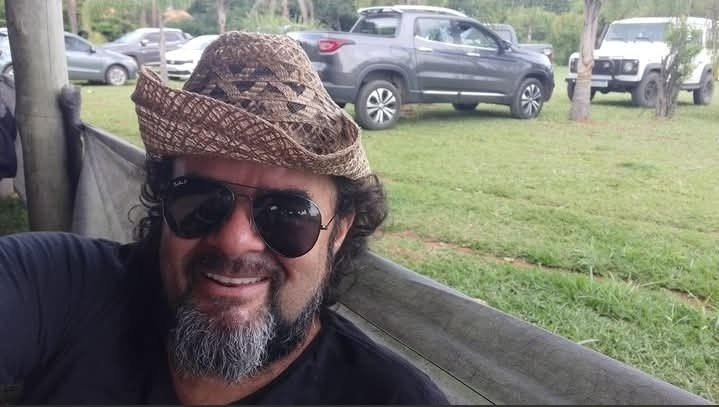

Músico de coração, compositor por vocação e inovador por escolha. Conheça a história de Sérgio Melo.

O Compositor
🎵 Compositor · Músico · Criador do MultiverSOM
Há décadas, Sérgio Melo compõe músicas que ficam na memória. Não como hobby, mas como expressão genuína de quem sempre enxergou na música a linguagem mais honesta que existe.
Ao longo dos anos, Sérgio fez músicas para a família, para os amigos, para grupos que marcaram sua vida. Muitas delas existiam apenas em fitas cassete ou na memória de quem as ouviu. Com o avanço das ferramentas modernas de produção musical, ele encontrou uma forma de dar voz e roupagem profissional a tudo que já havia criado, assim como ao que ainda está criando.
O que não mudou: a letra é dele, a melodia é dele, a alma é dele. Hoje, Sérgio domina as tecnologias e os softwares de ponta mais avançados do mercado para materializar o que imaginou. O processo envolve direção artística rigorosa, centenas de ensaios e meticulosas lapidações até alcançar um resultado de excelência altíssima que emociona.
Trajetória
18 de dezembro de 1967. Desde cedo, a música seria uma companheira inseparável.
Sérgio começa a compor músicas e a se aprofundar na teoria musical. A veia artística vai moldando sua sensibilidade para as histórias humanas.
Sérgio serve ao Exército e constrói laços que durarão décadas. Décadas depois, homenagearia essa turma com uma música especial.
Composições para família, amigos e grupos que marcaram sua vida. Cada música, uma história guardada com carinho.
Sérgio alia seu dom musical com as novas possibilidades da tecnologia, encontrando a forma perfeita para levar suas composições para o mundo com alta qualidade. Nasce o conceito do projeto MultiverSOM.
A primeira composição comercial é encomendada, consolidando o MultiverSOM como um serviço único e emocionante de músicas feitas sob medida.
Próximo capítulo
Sérgio Melo está disponível para compor músicas sob encomenda para qualquer ocasião. Basta ter uma história para contar.
✨ Quero minha música